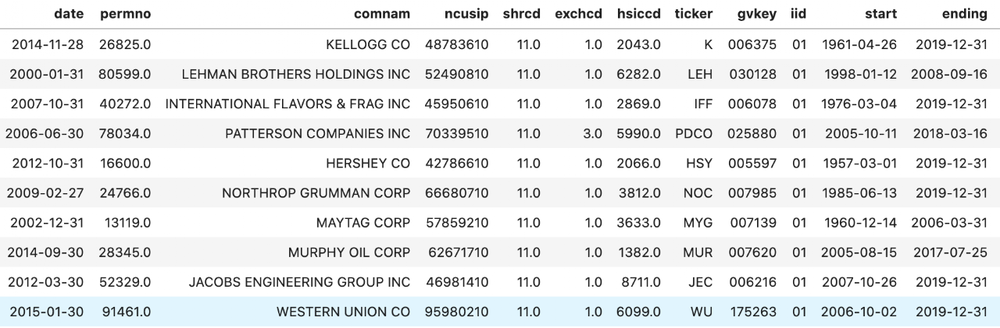

S&P 500 Constituents
This code illustrates how to get historical S&P 500 index constituents and their identifiers from CRSP and Compustat.
- Researchers used to be able to extract index membership information from Compustat’s “comp.idxcst_his” data. Now that S&P pulled this piece of data off from WRDS platform, we have to turn to CRSP to get S&P 500 Index membership data.
- Unfortunately, there is no easy way to uncover constituents info for the other indices covered by “comp.idxcst_his”.
- Import Python packages and connect to WRDS
##########################################
# S&P 500 Index Constituents #
# Qingyi (Freda) Song Drechsler #
# Date: October 2020 #
##########################################
import pandas as pd
import wrds
###################
# Connect to WRDS #
###################
conn=wrds.Connection()2. Get S&P 500 Index Membership from CRSP
- I opt for the monthly frequency of the data, but one can choose to work with crsp.dsp500list if more precise date range is needed.
sp500 = conn.raw_sql("""
select a.*, b.date, b.ret
from crsp.msp500list as a,
crsp.msf as b
where a.permno=b.permno
and b.date >= a.start and b.date<= a.ending
and b.date>='01/01/2000'
order by date;
""", date_cols=['start', 'ending', 'date'])3. Add Other Company Identifiers from crsp.msenames
- You don’t need this step if only PERMNO is required
- This step aims to add TICKER, SHRCD, EXCHCD and etc.
# Add Other Descriptive Variables
mse = conn.raw_sql("""
select comnam, ncusip, namedt, nameendt,
permno, shrcd, exchcd, hsiccd, ticker
from crsp.msenames
""", date_cols=['namedt', 'nameendt'])
# if nameendt is missing then set to today date
mse['nameendt']=mse['nameendt'].fillna(pd.to_datetime('today'))
# Merge with SP500 data
sp500_full = pd.merge(sp500, mse, how = 'left', on = 'permno')
# Impose the date range restrictions
sp500_full = sp500_full.loc[(sp500_full.date>=sp500_full.namedt) \
& (sp500_full.date<=sp500_full.nameendt)]4. Add Compustat Identifiers
- Link with Compustat’s GVKEY and IID if need to work with fundamental data
- Linkage is done through crsp.ccmxpf_linktable
# Linking with Compustat through CCM
ccm=conn.raw_sql("""
select gvkey, liid as iid, lpermno as permno, linktype, linkprim,
linkdt, linkenddt
from crsp.ccmxpf_linktable
where substr(linktype,1,1)='L'
and (linkprim ='C' or linkprim='P')
""", date_cols=['linkdt', 'linkenddt'])
# if linkenddt is missing then set to today date
ccm['linkenddt']=ccm['linkenddt'].fillna(pd.to_datetime('today'))
# Merge the CCM data with S&P500 data
# First just link by matching PERMNO
sp500ccm = pd.merge(sp500_full, ccm, how='left', on=['permno'])
# Then set link date bounds
sp500ccm = sp500ccm.loc[(sp500ccm['date']>=sp500ccm['linkdt'])\
&(sp500ccm['date']<=sp500ccm['linkenddt'])]
# Rearrange columns for final output
sp500ccm = sp500ccm.drop(columns=['namedt', 'nameendt', \
'linktype', 'linkprim', 'linkdt', 'linkenddt'])
sp500ccm = sp500ccm[['date', 'permno', 'comnam', 'ncusip', 'shrcd', 'exchcd', 'hsiccd', 'ticker', \
'gvkey', 'iid', 'start', 'ending', 'ret']]Sample output from the final data frame:
